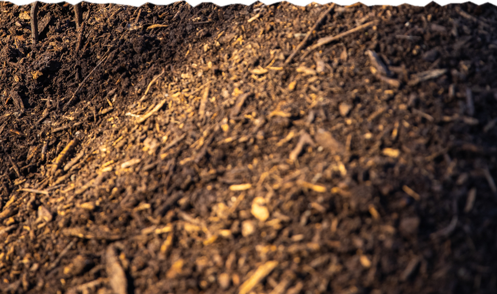
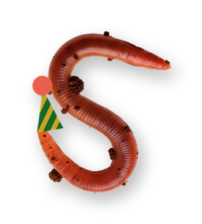
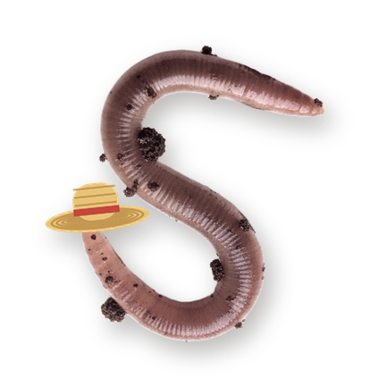
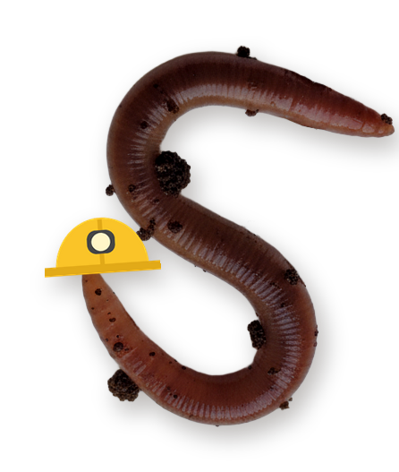
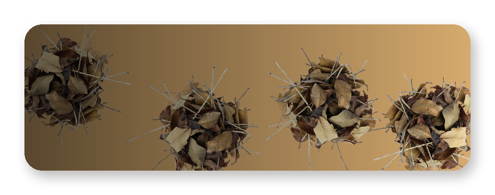
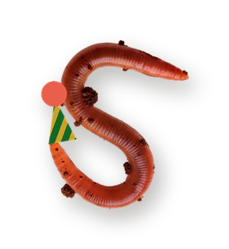
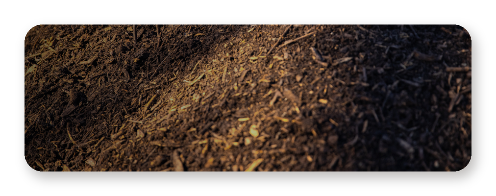
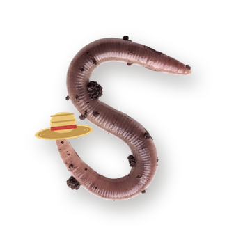
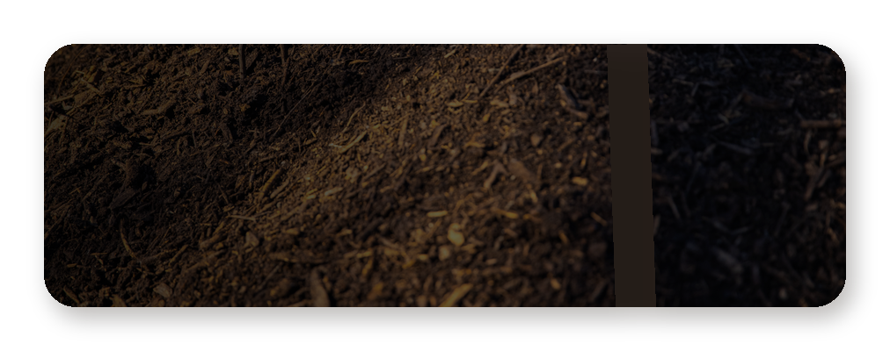
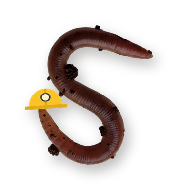

Is World Earthworm Day even a thing?




Is World Earthworm Day even a thing?







Which earthworm are you today?
Epigeic. Lives in the leaf litter and eats fast.
Endogeic. Stays in the topsoil and eats its way through it.
Anecic. Digs deep vertical burrows and comes up at night.